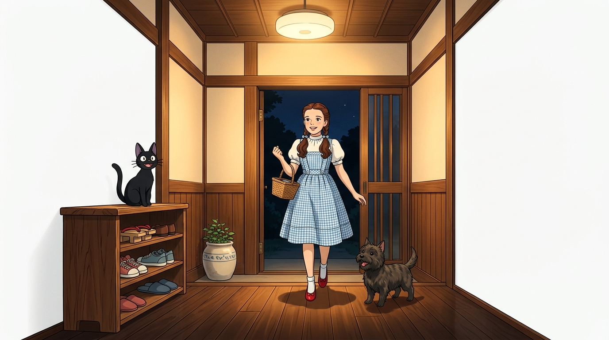
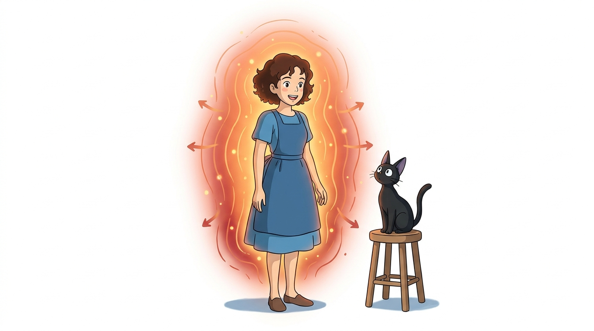
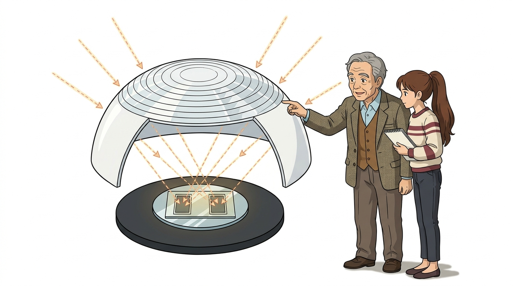
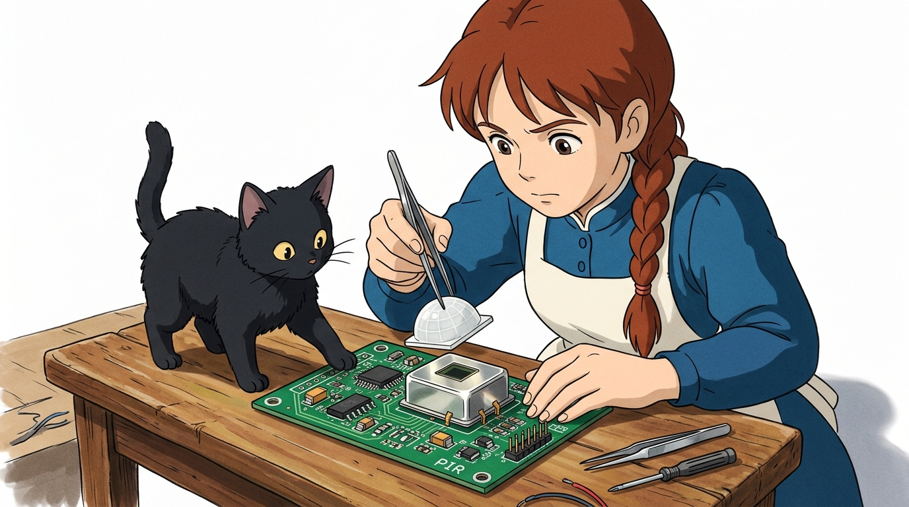
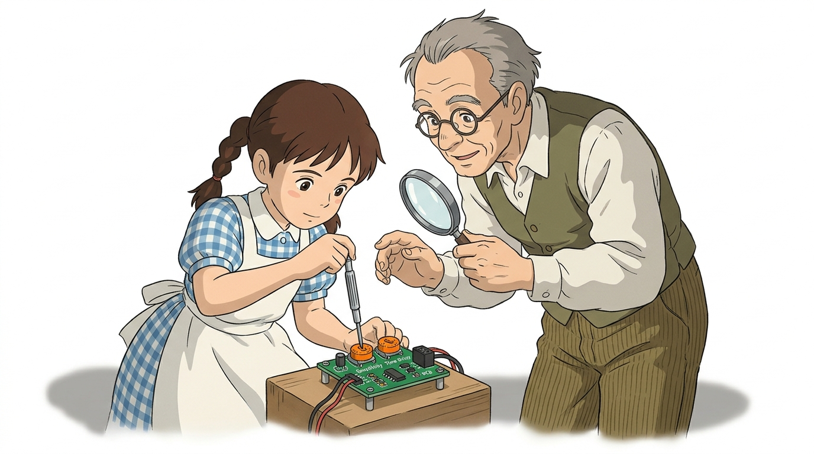
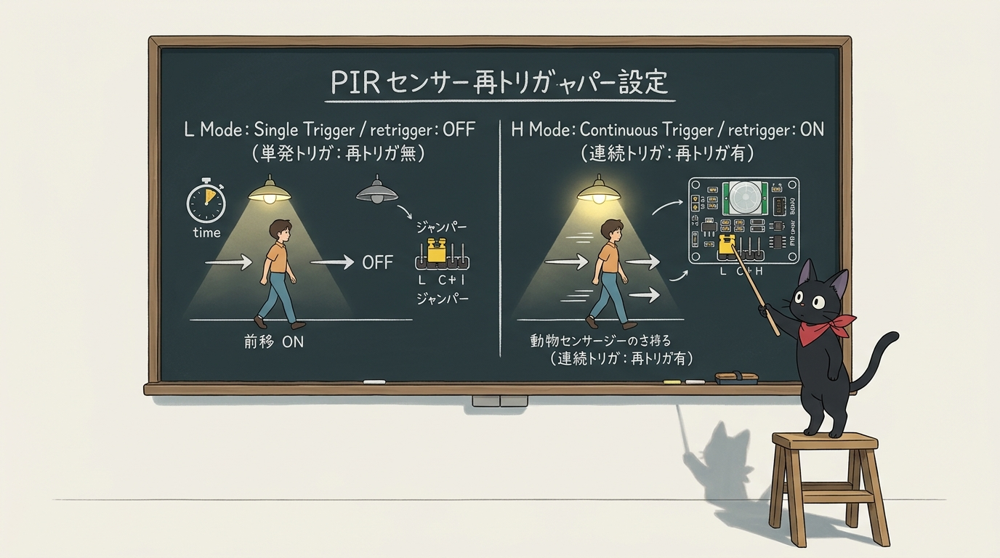
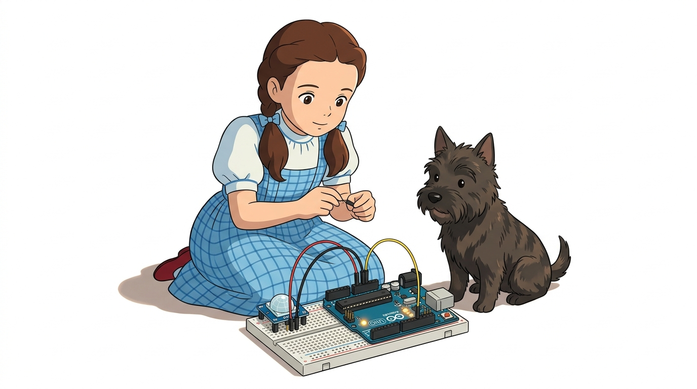
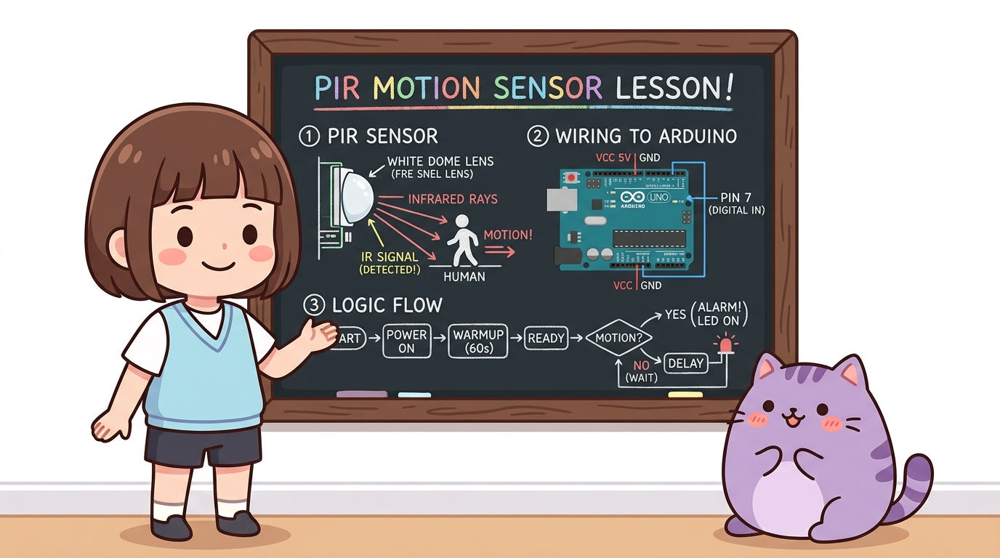
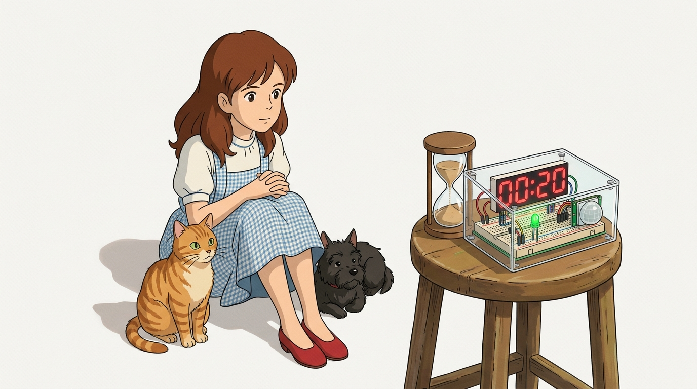

114_PIR인체감지센서_스마트조명 🚶♂️💡

도로시와 마법 멘토 지니의 현관 자동 센서등과 침입 감지기
- 👧 도로시: “지니야! 밤에 현관문에 들어서거나 아파트 복도를 걸어가면 천장 조명이 ‘딸깍!’ 하고 저절로 켜지잖아! 스위치도 안 눌렀는데 내가 온 걸 어떻게 알고 켜는 거야?”
- 🐱 지니: “사람의 따뜻한 체온(36.5℃)에서 뿜어져 나오는 보이지 않는 적외선 열기를 감지하는 PIR(Passive Infrared) 인체 감지 센서 덕분이란다! 오늘 우리도 멋진 자동 스마트 현관등을 직접 만들어보자!”
-
🐶 토토: “바우! (살금살금 까치발로 지나가도 딱 걸린다 멍!)”
- 🖥️ 강의 슬라이드: slides.md
1. PIR 센서란 무엇일까요? 🔍
PIR 센서는 움직이는 사람이나 동물이 방출하는 적외선(Infrared Radiation)의 공간적 변화를 포착하여 디지털 스위치 신호를 발생시키는 모션 감지 센서입니다.
- 수동형(Passive) 센서의 비밀:
- 센서가 직접 초음파나 빛을 쏘아 반사파를 측정하는 능동형(Active) 센서와 달리, 주변 환경과 사람 몸에서 자연 방출되는 적외선만을 조용히 받아들이기(Passive) 때문에 전력 소모가 극히 적습니다.
- 주요 응용 분야:
- 아파트 현관문, 복도, 계단, 공중화장실의 에너지 절약형 자동 센서등
- 침입자 발생 시 사이렌을 울리는 무인 방범 도난 경보기 (CCTV 연동)
- 백화점, 호텔, 지하철 역사의 자동문 출입문 개폐 제어기
2. 눈에 보이지 않는 열의 전자기파: 적외선(IR) 🌐

절대영도($-273.15^\circ\text{C}$)보다 높은 온도를 가진 우주의 모든 물체는 표면에서 고유한 파장의 전자기파를 우주로 복사 방출합니다.
- 인체 방출 파장:
- 사람의 정상 체온(약 $36.5^\circ\text{C}$)에서는 파장 약 $9\mu\text{m} \sim 10\mu\text{m}$ 부근의 원적외선(Far Infrared) 에너지가 가장 강하게 뿜어져 나옵니다.
- 주변 배경과의 열 대조(Thermal Contrast):
- 실내 방 안의 벽면이나 가구의 온도(약 $20^\circ\text{C} \sim 24^\circ\text{C}$)보다 사람의 체온이 더 높기 때문에, 사람이 센서 앞을 걸어가면 센서의 시야각 안에서 적외선 에너지의 급격한 출렁임이 발생합니다.
3. 프레넬 렌즈(Fresnel Lens)와 파이로일렉트릭 소자 🔬

PIR 센서의 겉면을 감싸고 있는 하얀색 돔 뚜껑과 내부 핵심 반도체 소자의 협업 원리입니다.
- 하얀색 반구형 캡 (프레넬 렌즈, Fresnel Lens):
- 겉표면에 동심원 모양의 미세 프리즘 굴절 패턴이 촘촘히 새겨져 있습니다.
- 좌우 $100^\circ \sim 120^\circ$의 넓은 부채꼴 각도에서 흩어져 들어오는 적외선 빛을 돋보기처럼 한 점으로 집광하여 내부 소자에 쏘아줍니다.
- 파이로일렉트릭(Pyroelectric) 듀얼 센서 소자:
- 금속 캔 뚜껑 속에는 두 개의 감지 전극(슬롯 A, 슬롯 B)이 나란히 배치되어 있습니다.
- 사람이 왼쪽에서 오른쪽으로 걸어가면, 슬롯 A에 먼저 적외선 열이 닿았다가 슬롯 B로 열기가 이동합니다.
- 차동 전압 펄스 생성:
- 두 슬롯 사이의 순간적인 온도 차이로 인해 극성이 반대인 플러스/마이너스 전압 펄스가 만들어지며, 제어 칩(BISS0001)이 이를 증폭하여 HIGH(5V) 신호로 전환합니다!
4. 센서 모듈 외형과 돔 캡 내부 구조 🔎

흰색 돔 캡을 조심스럽게 열어보면 금속으로 실딩된 파이로일렉트릭 센서 캔과 정밀 집적회로가 드러납니다.
- 금속 실드 캔(Metal Shielding Can):
- 스마트폰이나 Wi-Fi 전파, 형광등 노이즈 등 외부 전자기파 간섭(EMI)을 차단하여 오작동을 방지합니다.
- 적외선 투과 필터 윈도우(IR Window):
- 센서 캔 상단 유리창은 $7\mu\text{m} \sim 14\mu\text{m}$ 파장의 인체 적외선만을 선택적으로 통과시키고, 일반 가시광선 햇빛은 반사하여 걸러냅니다.
5. 센서 모듈 핀 배열과 조절 다이얼 2개 🎛️

PIR 센서 뒷면에는 드라이버로 돌려 감도와 유지 시간을 손쉽게 튜닝할 수 있는 주황색 가변저항 2개가 탑재되어 있습니다.
| 조절기 / 핀 | 주요 기능 및 역할 | 튜닝 방향 가이드 |
|---|---|---|
| 거리 조절 (Sensitivity) | 유효 감지 거리 (약 3m ~ 최대 7m) 조절 | 시계 방향 ➔ 거리 증가(멀리 감지), 반시계 ➔ 거리 감소(가까이 감지) |
| 시간 조절 (Time Delay) | 사람 감지 후 HIGH 신호 유지 시간 (약 3초 ~ 300초) | 시계 방향 ➔ 켜짐 시간 길어짐, 반시계 ➔ 켜짐 시간 짧아짐(약 3초) |
| VCC 핀 | 전원 공급 단자 (+) | 아두이노 5V 핀에 연결 (내부 레귤레이터 탑재) |
| OUT 핀 | 디지털 모션 감지 출력 신호 | 아두이노 디지털 7번 핀 연결 (감지 시 5V HIGH, 미감지 시 0V LOW) |
| GND 핀 | 전원 접지 단자 (-) | 아두이노 GND 핀 연결 |
6. 재트리거(Retrigger) 점퍼 설정: H 모드 vs L 모드 🔀

모듈 모서리에 있는 노란색 점퍼 핀으로 동작 방식을 하드웨어적으로 전환할 수 있습니다.
- H 모드 (연속 트리거, Repeat Trigger - 권장):
- 사람이 센서 앞에서 계속 춤을 추거나 서성거리면, 설정된 시간이 지나도 전등이 꺼지지 않고 움직임이 멈출 때까지 계속 불이 켜진 상태를 유지합니다. (현관등, 스마트 룸 조명에 최적!)
- L 모드 (단일 트리거, Single Trigger):
- 사람이 센서 앞에서 계속 움직여도 정해진 시간(예: 5초)이 지나면 무조건 불이 한 번 꺼졌다가 다시 감지 사이클을 시작합니다. (출입자 계수기 카운터에 적합)
7. 아두이노와 PIR 센서 브레드보드 회로 배선도 🔌

아두이노 우노 보드에 PIR 센서와 감지 확인용 LED를 브레드보드로 견고하게 배선합니다.
📌 부품 연결 3단계
- PIR 센서 전원선 배선:
- 센서 모듈의 VCC 핀 ➔ 아두이노 5V 핀 연결
- 센서 모듈의 GND 핀 ➔ 아두이노 GND 핀 연결
- 센서 디지털 신호선 배선:
- 센서 모듈의 OUT 핀 ➔ 아두이노 디지털 7번 핀 연결
- 현관 표시등 LED 배선:
- 아두이노 디지털 13번 핀 ➔ $220\Omega$ 저항 ➔ LED 긴 다리(애노드, +)
- LED 짧은 다리(캐소드, -) ➔ 아두이노 GND 핀 연결
8. 칠판 교실: PIR 센서 시스템과 제어 로직 구조 🎨

지니 선생님이 칠판에 정리해 준 스마트 현관등의 전체 하드웨어-소프트웨어 제어 흐름입니다.
- 1단계 (Power On & Warmup): 전원을 넣은 후 20초간 센서의 열 평형 안정화를 기다립니다.
- 2단계 (IR Signal Sensing): 프레넬 렌즈가 인체 적외선을 집광하여 파이로 소자가 차동 펄스를 만듭니다.
- 3단계 (Digital Read & Action): 아두이노 7번 핀으로 들어온 신호가 HIGH이면 즉시 13번 핀 LED를 켜고 시리얼 경보를 띄웁니다!
9. 실습: 스마트 현관등 전체 아두이노 스케치 💻
사람의 움직임이 포착되면 즉각 불을 밝히고 시리얼 모니터로 출입 상태를 보고하는 표준 스케치입니다.
// ==========================================
// 07.4-2 스마트 현관 센서등 & 침입 감지기
// ==========================================
const int pirPin = 7; // PIR 센서 OUT 신호 입력 핀
const int ledPin = 13; // 현관등 상태 표시 LED 출력 핀
void setup() {
Serial.begin(115200); // PC 시리얼 모니터와 115200 bps 통신 개시
pinMode(pirPin, INPUT); // 7번 핀: 센서의 HIGH/LOW 신호를 읽는 입력 모드
pinMode(ledPin, OUTPUT); // 13번 핀: LED에 5V 전압을 공급하는 출력 모드
Serial.println("========================================");
Serial.println(" PIR Motion Sensor Initializing... ");
Serial.println(" 센서가 실내 온도를 학습 중입니다 (20초) ");
Serial.println("========================================");
// 센서가 주변 적외선 환경을 학습할 때까지 20초간 깜빡이며 대기
for (int i = 0; i < 20; i++) {
digitalWrite(ledPin, HIGH);
delay(200);
digitalWrite(ledPin, LOW);
delay(800);
Serial.print(".");
}
Serial.println("\n>> [READY] 센서 준비 완료! 움직임을 감지합니다.");
}
void loop() {
int motionDetected = digitalRead(pirPin); // 7번 핀 신호 검사
if (motionDetected == HIGH) {
digitalWrite(ledPin, HIGH); // 사람 감지 시 전등 ON!
Serial.println("🚨 [ALERT] 사람의 움직임 포착! -> 현관 조명 ON");
} else {
digitalWrite(ledPin, LOW); // 사람 부재 시 전등 OFF!
Serial.println("... [QUIET] 주변이 조용합니다 (대기 모드)");
}
delay(500); // 0.5초 간격으로 상태 갱신
}
10. 코드 상세 해설 ①: 20초 예열(Warm-up) 대기 루프 ⚙️

초보 메이커들이 가장 많이 겪는 “센서에 전원만 꽂으면 혼자 멋대로 켜져요!” 오류를 원천 차단하는 핵심 알고리즘입니다.
for (int i = 0; i < 20; i++) {
digitalWrite(ledPin, HIGH);
delay(200);
digitalWrite(ledPin, LOW);
delay(800);
Serial.print(".");
}
- PIR 센서의 열적 안정화 시간(Thermal Settling Time):
- 파이로일렉트릭 결정체는 전원이 공급된 직후 내부 전하가 요동치며 약 20초에서 길게는 60초까지 불안정한 과도 상태를 겪습니다.
- 사용자 친화적 LED 인디케이터:
for반복문으로 1초에 한 번씩 LED를 경쾌하게 깜빡여 “센서가 실내 배경 온도를 안전하게 학습하는 중입니다”라는 시각적 신호를 사용자에게 제공합니다.
- 가짜 경보(False Alarm) 차단:
- 워밍업 루프가 끝난 뒤에야 비로소
loop()함수가 시작되므로 가짜 침입 경보가 발생하지 않습니다.
- 워밍업 루프가 끝난 뒤에야 비로소
11. 코드 상세 해설 ②: digitalRead(7)와 움직임 감지 판정 🚪
loop() 안에서 0.5초마다 호출되는 디지털 판정 로직입니다.
int motionDetected = digitalRead(pirPin);
if (motionDetected == HIGH) {
digitalWrite(ledPin, HIGH);
} else {
digitalWrite(ledPin, LOW);
}
- 전압 판정:
digitalRead(7)이 센서 OUT 핀의 전압을 측정합니다.- 센서 내부 BISS0001 칩이 움직임을 감지하면 5V 전압을 내보내어
motionDetected에HIGH(1)이 대입됩니다.
- 지속 시간 딜레이와의 조화:
- 모듈 뒷면의 시간 조절 가변저항으로 설정된 시간(기본 약 3~5초) 동안 센서 하드웨어가 스스로 HIGH 전압을 유지해 주므로, 코드가 복잡한 타이머를 작성하지 않아도 안정적인 켜짐 시간을 유지할 수 있습니다.
12. 코드 상세 해설 ③: 부저와 LED를 결합한 스마트 방범 경보기 확장 🔔

단순한 현관등을 넘어 침입자 경보기(Burglar Alarm)로 회로와 코드를 확장하는 기법입니다.
if (motionDetected == HIGH) {
digitalWrite(ledPin, HIGH);
tone(8, 2000, 300); // 8번 핀 피에조 부저로 2000Hz 경고음 0.3초 발생!
} else {
digitalWrite(ledPin, LOW);
noTone(8); // 소리 끄기
}
- 소리와 빛의 복합 피드백:
- 8번 디지털 핀에 피에조 부저를 추가 결선하고
tone(pin, freq, duration)함수를 사용하면 야간 침입 시 귓전을 울리는 강력한 방범 사이렌을 울릴 수 있습니다.
- 8번 디지털 핀에 피에조 부저를 추가 결선하고
- 반려동물(펫) 오작동 방지 노하우:
- 36.5℃ 체온을 가진 강아지(토토)나 고양이도 센서 시야각에 들어오면 반응합니다.
- 센서를 성인 가슴 높이(약 1.2m~1.5m)에 장착하고 렌즈 하단을 절연 테이프로 살짝 가려주면 사람만 감지하는 스마트 펫 면역(Pet-Immune) 센서가 완성됩니다!
🌟 도로시와 지니의 핵심 요약 노트! 🏆

📋 07.4-2 PIR 인체 감지 센서 정복 체크리스트
- 수동 적외선(PIR) 원리: 체온에서 방출되는 $9\sim10\mu\text{m}$ 원적외선 열변화를 파이로 소자로 포착하는 저전력 수동 센싱의 원리를 배웠습니다.
- 프레넬 렌즈의 역할: 넓은 시야각($120^\circ$)의 적외선 빛을 집광하여 듀얼 슬롯에 차동 펄스를 만들어냄을 이해했습니다.
- 2대 가변저항 튜닝: 거리(Sensitivity)와 유지 시간(Time Delay) 조절 다이얼을 환경에 맞게 조율했습니다.
- 20초 예열 알고리즘: 전원 투입 초기 과도 현상과 가짜 경보를 제거하는
for루프 초기화 테크닉을 체득했습니다.
👧 도로시: “PIR 센서는 스스로 빛을 쏘지 않고 사람 몸에서 나오는 적외선 열을 조용히 받아들이는 수동형 센서라 전기를 아주 적게 먹는 거였구나!”
🐱 지니: “맞아! 하얀 프레넬 렌즈가 넓은 시야를 모아주고, 가변저항 2개로 거리와 켜짐 시간을 손쉽게 맞출 수 있단다.”
🐶 토토: “바우! 다음 시간에는 손가락 끝에서 콩닥콩닥 뛰는 심장 박동을 재는 ‘07.4-3 심박 센서’를 배우러 가자 멍!”